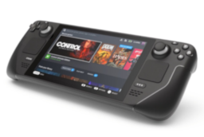
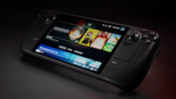

Valve Corporation is an American video game developer, publisher, and distribution company. It was founded by Gabe Newell and Mike Harrington. The company is most known for games such as Half-Life, Counter-Strike, and Portal. It is also known for the Steam platform, The biggest PC Gaming platform to date.
In 2015, Valve dipped its toes into computers with the Steam Machine, A series of computers that come with SteamOS, A Debian-based operating system that comes with the GNOME desktop (Version 1.0 and 2.0).
Valve did not produce the machines, Instead, Valve partnered with OEMs such as Dell (Via its Alienware subbrand), Gigabyte, and other computer builders to produce the hardware.
To accompany it, Valve designed the Steam Controller, A controller with the unique feature of its D-Pad being a touchpad. The controller would last a little longer, Being discontinued in 2019.
The Steam Machine line would last between 2015 and 2018 before Valve discontinued it. The line was a financial failure, with early estimates showing that fewer than half a million units were sold.
In 2022, Following the success of portable consoles such as the Nintendo Switch, Valve would release the Steam Deck. This would run SteamOS 3.0, the previous Debian base is replaced with an Arch Linux base, increasing reliability and speed.
The steam deck was far more successful than its previous attempt, Selling around 1.62 million units in it's first year alone, according to Omdia.
The steam deck was launched in 2022. It is a portable gaming computer who's main competition is the Nintendo Switch and Asus ROG Ally.
| Photo | Machine | Year Of Introduction | CPU | RAM | Hard Drive | Modem/Networking | Cache | Sound Card | GPU | Bundled Operating System | Bundled Software | Official Specs Sheet (May not work in classic browsers) | Notes |
|---|---|---|---|---|---|---|---|---|---|---|---|---|---|
|  | Steam Deck LED | 2022 | Custom designed 7 nm AMD Zen 2 APU with 4 Cores and 8 Threads 2.4GHz Base Clock(3.5GHz max) |
16GB LPDDR5, Not officially upgradable |
64GB (eMMC, Base) 256GB (NVMe SSD) 512GB (NVMe SSD) MicroSD Card slot included, with maximum size per card of 2TB (Limited by SDXC Standard, but card not available yet.) |
Bluetooth 5.3 support Tri-band Wi-Fi 6E, supports 2.4GHz, 5GHz and 6GHz, Supports 802.11a/b/g/n/ac/ax |
Unknown | Unknown | Custom designed AMD Zen 2 APU, 8 RDNA, 2 CUs, 1.6GHz with 1.6 TFlops | SteamOS 3.0 based on Arch Linux with KDE Plasma Desktop, Windows 10 and 11 drivers available. |
Steam Client Proton |
Valve Specs Sheet Website | |
|  | Steam Deck OLED | 2023 | Custom designed 6 nm AMD Zen 2 APU with 4 Cores and 8 Threads
2.4GHz Base Clock(3.5GHz max) |
16GB LPDDR5, Not officially upgradable | 512GB (Base, NVMe SSD) 1TB (NVMe SSD) |
Bluetooth 5.3 support Tri-band Wi-Fi 6E, supports 2.4GHz, 5GHz and 6GHz, Supports 802.11a/b/g/n/ac/ax |
Unknown | Unknown | Custom designed AMD Zen 2 APU, 8 RDNA, 2 CUs, 1.6GHz with 1.6 TFlops | SteamOS 3.0 based on Arch Linux with KDE Plasma Desktop, Windows 10 and 11 drivers available. | Steam Client Proton |
Valve Specs Sheet Website |